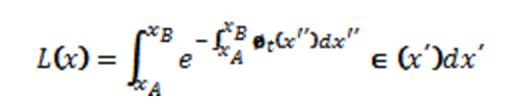
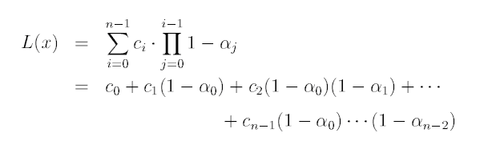
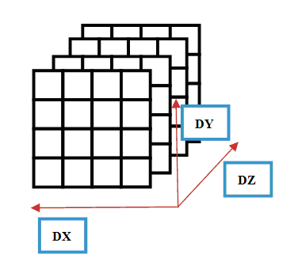
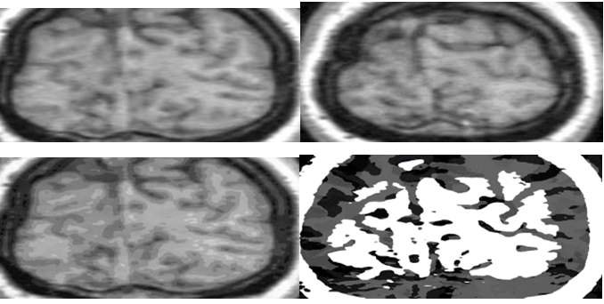
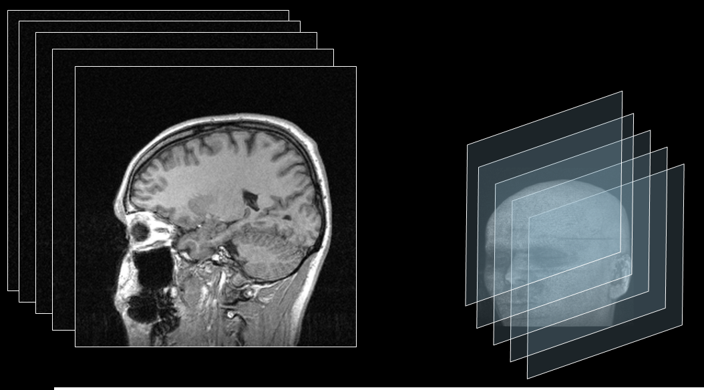
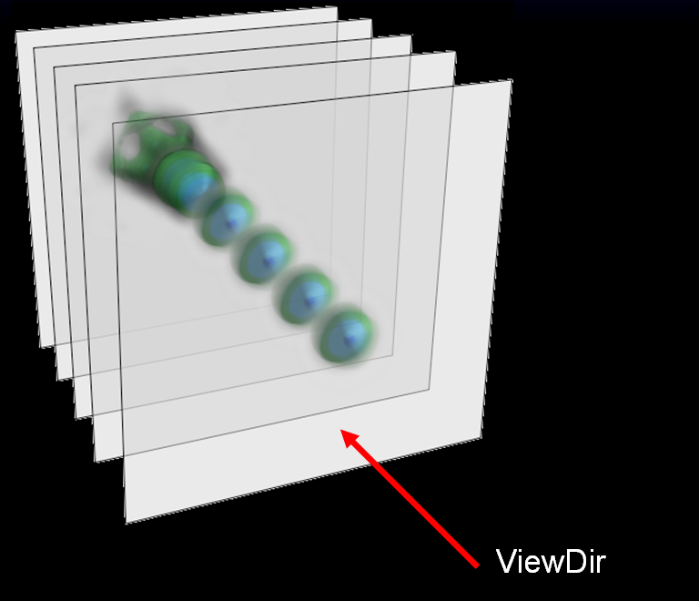
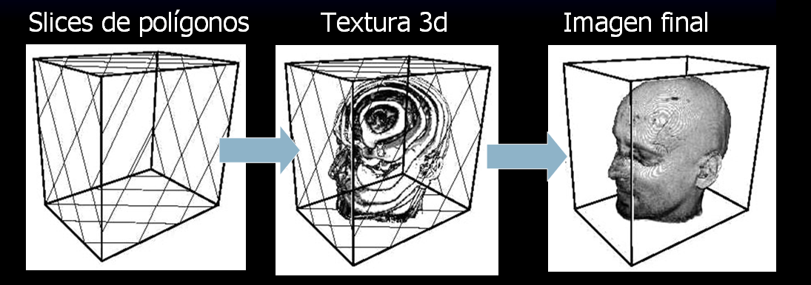
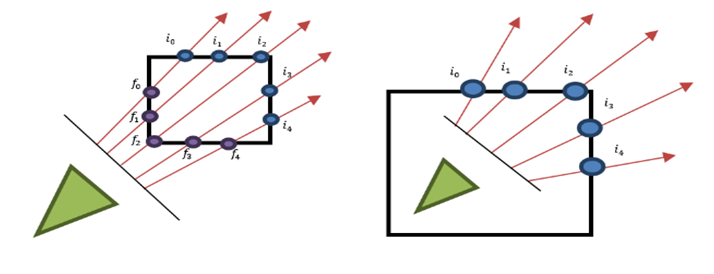
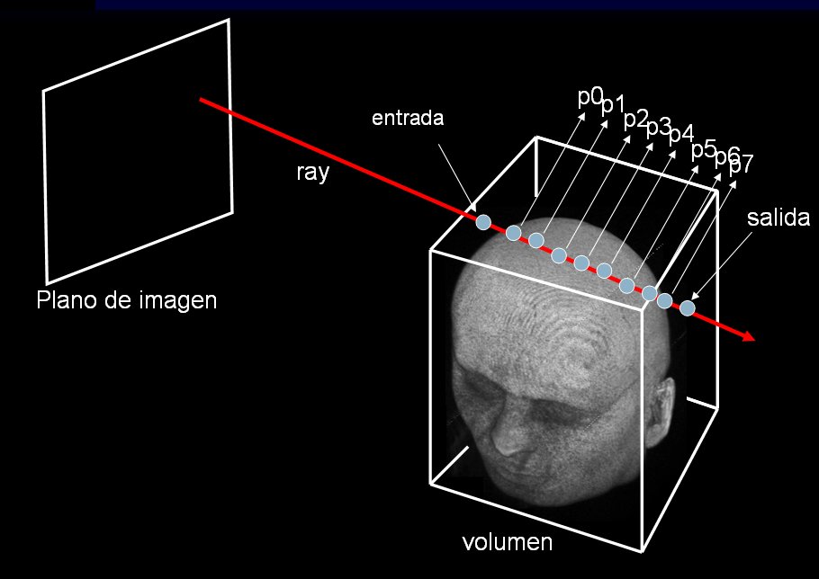
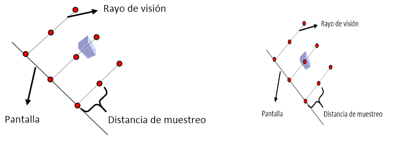

Existen numerosos formatos de datos volumétricos dependiendo del tipo de máquina ( scanner, PET, etc.) y el tipo de uso. La mayoría define un tamaño en las 3 dimensiones (ancho, alto y profundidad) en vóxeles, y cada vóxel contiene un valor de opacidad o capacidad de absorción de energía en esa región del espacio.
La ecuación de VR explica cómo la energía es absorbida por las diferentes capas de materia a medida que atraviesa el volumen a estudiar. Los parámetros ópticos son obtenidos directamente de o computados a partir de una o varias funciones de transfe-rencia sobre los datos. Estas funciones resaltan o clasifican ciertas partes del volumen.
Como la ecuación de VR no puede ser evaluada numéricamente en forma cerrada, (closed form) se utilizan distintas aproximaciones como la ecuación de VR discreta
Las placas de video actuales son capaces de almacenar grandes cantidades de datos en formato de imágenes llamados texturas. Están diseñadas para aplicarse sobre primitivas gráficas en el proceso llamado shading o texturing. Muchas placas de última generación tienen soporte nativo para texturas 3D que pueden usarse para almacenar datos volumétricos en forma directa. Las texturas volumétricas están compuestas por rebanadas o cortes 2D que se apilan internamente formando un cubo y que pueden ser accedidas usando 3 coordenadas de texturas u, v, w.
Las imágenes médicas suelen tener 12 o 16 bits de precisión para almacenar la intensidad de los vóxeles. Para minimizar la cantidad de memoria utilizada en la implementación se usa el formato GL_RGBA8, compuesto de 4 canales de 8 bits por canal, pudiendo almacenar un total de 4 vóxeles por cada elemento de textura (4x). Dado que el tamaño máximo de una textura es de 4096*4096 (en una placa genérica), la cantidad máxima de vóxeles es de 4096*4096*4 = 67108864, que pueden ser arreglados en una matriz de 1024*1024*64 o bien de 256*256*1024 según el escenario.
En la tecnica de Texture VR la imagen original es cortada en fetas o slices. Cada slice representa una porcion plana del volumen original.
Luego para graficar se dibujan los slices en orden de atras hacia adelante, activando la transparencia.
 Video de animacion de slices
La técnica estándar de ray-casting consiste en generar rayos desde el punto de vista hacia todas las direcciones; evaluar, para cada rayo, cual es el punto de entrada y cual el de salida en el volumen a renderizar; e iterar por la estructura de vóxeles desde el punto de entrada hasta el punto de salida y en cada paso evaluar la ecuación de VR.
En una implementación en OPENGL, el fragment shader calcula, para cada píxel de pantalla, la dirección del rayo y los puntos de entrada y salida e iterar por el volumen computando en cada paso en la ecuación de 4,28 cm. No existe en un Vertex Shader, sino que se dibuja una primitiva que ocupa toda la pantalla, llamada fullscreen com-pute quad, para ejecutar un fragment shader para cada píxel de pantalla en paralelo. En este caso, el punto de vista se encuentra dentro del volumen que se quiere dibujar y la técnica estándar no es efectiva. A medida que el rayo se aleja del punto de partida, la contribución de cada vóxel que se evalúa decrece en forma exponencial como se observa en la ecuación de VR. Para un videojuego, sólo es necesario tomar algunos puntos de muestra en la dirección del rayo. Cuántas más muestras se computen más lento es el proceso, considerando que el acceso a textura es muy costoso en la arqui-tectura de GPU.
Los parámetros a configurar en el motor de visualización son:
Se puede observar un artifact que genera esta técnica. Debido a la distancia entre los pasos, hay un objeto que no está siendo muestreado debido a la posición de las muestras y del objeto en si. Pero al mover la cámara y variar la posición del rayo donde se toman las muestras, el objeto se muestrea y aparece dibujado. Esto produce que los objetos aparezcan y desaparezcan a medida que la cámara se mueve.
Para atacar el problema de la figura existen dos posibles soluciones: